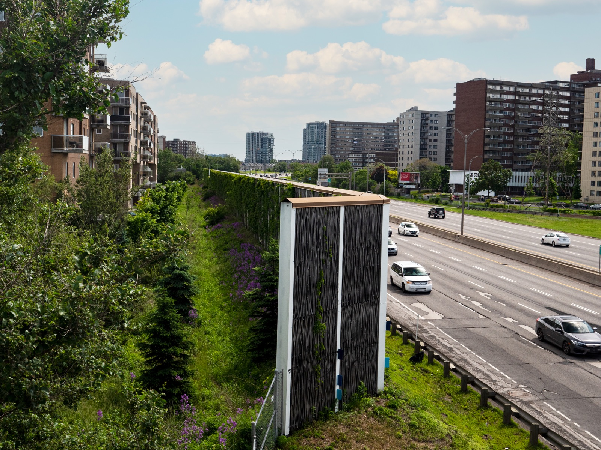
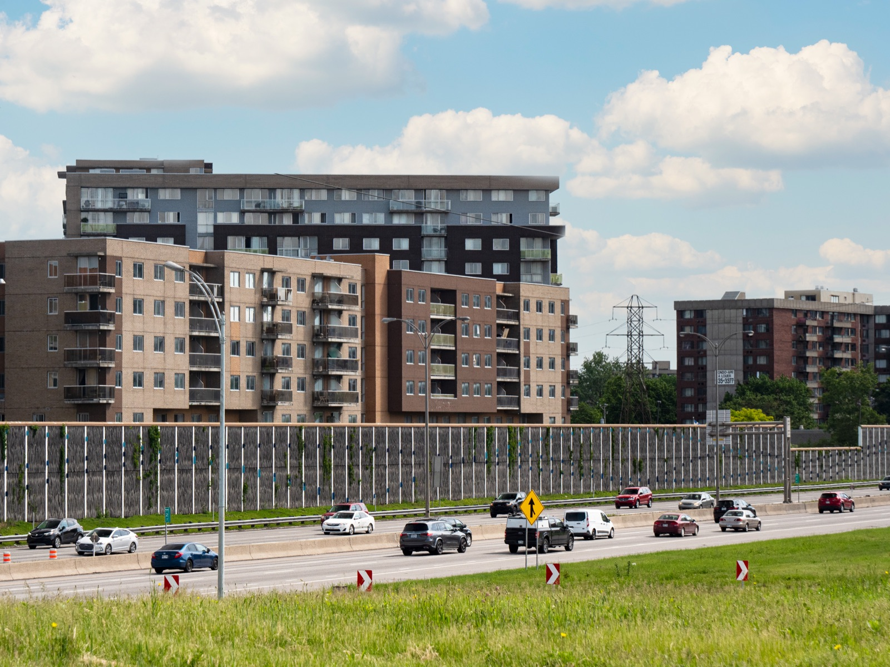
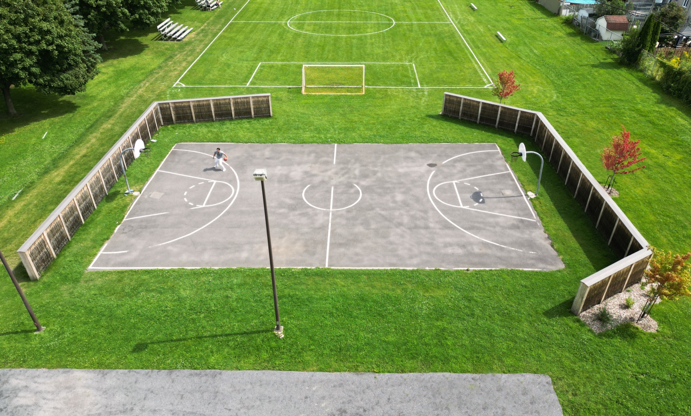
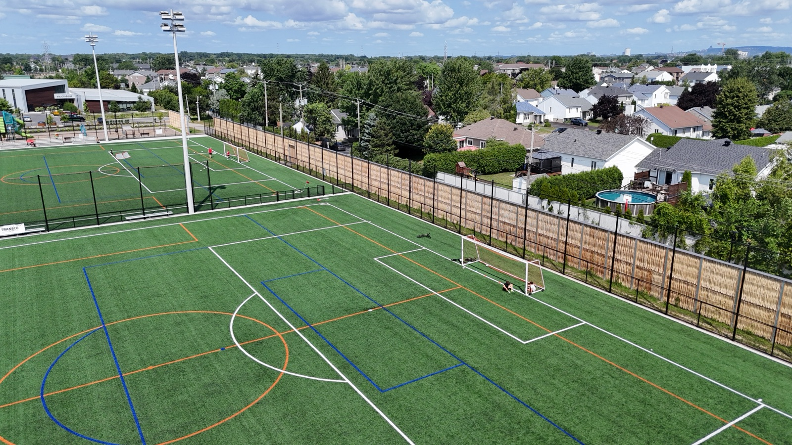
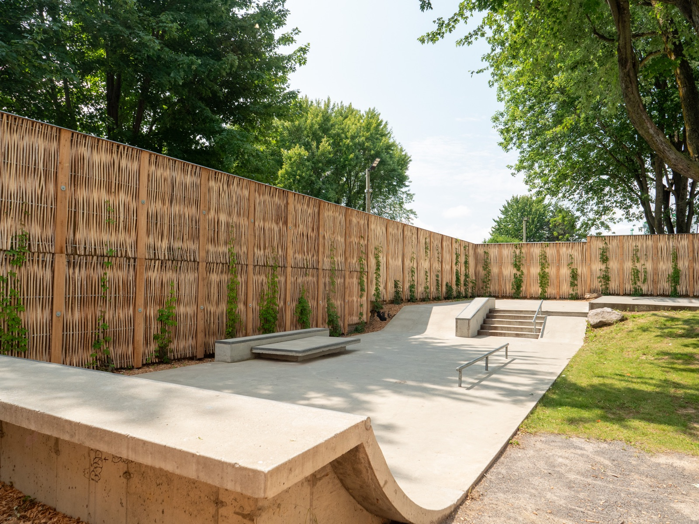

Atténuer le bruit.
Se rapprocher de la nature.
HF1 et Pilebyg — deux produits de murs antibruit en bois, à noyau acoustique en laine de roche. Une approche naturelle ou minimaliste.
Nos deux murs antibruit en bois.
HF1 en bois de mélèze, Pilebyg en bois de saule tressé. Fabriqués au Canada, distribués en Amérique du Nord.

HF1
Mur antibruit en mélèze, noyau acoustique en laine de roche. Texture bois, lignes droites et finition contemporaine.
- Atténuation jusqu'à −10 dB
- Absorbant d'un côté
- Durabilité 30+ ans
- Design épuré

Pilebyg
Mur antibruit en saule tressé, noyau acoustique en laine de roche. Texture organique, intégration paysagère naturelle.
- Atténuation jusqu'à −10 dB
- Absorbant des deux côtés
- Durabilité 30+ ans
- Anti-graffiti naturel — la peinture n'adhère pas aux tiges lisses
Un mur antibruit pour chaque source de bruit.
Nos murs antibruit sur le terrain.









Études de cas — murs antibruit.
Projets livrés au Québec — murs antibruit HF1 et Pilebyg en contexte routier, sportif et industriel.
Boucherville, QC
Boulevard Industriel — secteur résidentiel
Mur Pilebyg de 750 m × 3 m — réduction sonore mesurée de 11 dBA (69 → 58 dBA).
Lire le cas →Lavaltrie, QC
Parc des Riverains — terrains de basketball
Mur antibruit végétal de 35 m × ≥ 3 m — réduction simulée de 5 à 15 dBA (étude Vinacoustik).
Lire le cas →Murs antibruit en bois — FAQ.
Pourquoi vos murs antibruit sont-ils végétalisés ?
La végétalisation des façades apporte plusieurs bénéfices environnementaux : gestion des eaux pluviales, régulation thermique par évapotranspiration, atténuation des îlots de chaleur, captation du CO₂. Les façades végétales contribuent aussi à la biodiversité urbaine en servant de corridors écologiques, et améliorent la qualité de vie des occupants — le contact avec un paysage naturel est associé à une réduction du stress, de la pression sanguine et des tensions musculaires. Enfin, les plantes grimpantes prolongent la durée de vie des infrastructures en les protégeant de la pluie et des UV.
Vos murs antibruit sont-ils écologiques ?
Oui. Nos produits sont conçus pour limiter leur empreinte écologique. Les matériaux utilisés sont durables, naturels, recyclables, sans entretien et majoritairement approvisionnés localement. Le bois utilisé a capté et séquestré une quantité importante de carbone — les produits sont donc sobres en carbone. Ramo applique les meilleures pratiques de conception pour atteindre des espérances de vie comparables, voire meilleures, que les matériaux traditionnels.
Vos murs sont-ils efficaces pour diminuer le bruit ?
Nos produits ont été testés et certifiés conformes aux normes ASTM E90, E413 et C423. Ils respectent les plus hauts standards de l'industrie et les normes du Ministère des Transports et de la Mobilité durable du Québec (MTMD). À partir d'une étude acoustique, nous concevons le mur en respectant les exigences de hauteur, longueur, emplacement et caractéristiques (densité surfacique, STC, NRC) pour répondre à votre besoin de mitigation sonore. Nous travaillons avec l'ensemble des firmes spécialisées en acoustique.
Le mur peut-il prendre feu ?
Historiquement, en cumulant notre expérience et celle de nos partenaires, aucun projet n'a été exposé à un incendie d'importance. Bien que le bois ait des propriétés inflammables, l'indice de propagation reste relativement faible en raison des matériaux utilisés. La laine de roche agit comme retardateur et les poteaux en acier limitent la propagation.
Le bois va-t-il pourrir avec le temps ?
Le bois est utilisé dans la construction et les infrastructures routières depuis des siècles (ponts, glissières, poteaux de téléphone). Avec des essences durables et une intégration judicieuse, il offre une grande espérance de vie. L'ennemi premier du bois étant l'humidité, Ramo applique les meilleures pratiques :
• couvert métallique protecteur sur le dessus de l'écran
• techniques de minimisation des contacts entre pièces de bois
• conception limitant les remontées d'humidité du sol
• profilage et disposition des pièces pour évacuer l'eau
• composantes structurales en acier galvanisé
• intégration de plantes grimpantes pour réduire la dégradation par UV et pluie.
Quel entretien est nécessaire ?
Aucun entretien n'est requis. Tous les matériaux utilisés sont sans entretien.
Vos produits résistent-ils au vent ?
Nos produits sont conçus pour résister aux charges de vent selon les normes et codes applicables (Code National du Bâtiment, Code canadien sur le calcul des ponts routiers CSA S6, etc.). Nous fournissons les dessins d'ateliers signés et scellés par un ingénieur membre en règle d'un ordre professionnel.
Vos produits résistent-ils aux conditions hivernales ?
Oui. Nos produits sont conçus pour résister aux conditions hivernales rigoureuses du Québec et de l'Amérique du Nord, et le bois offre une grande résistance à l'empreinte saline. L'implantation et l'élévation sont des points d'attention : les panneaux ne sont pas conçus pour résister aux projections de déneigeuses. Une élévation adéquate sur une base en béton permet d'installer des écrans en bordure d'autoroute. Nos produits jouissent par ailleurs d'un long historique en Scandinavie, exposée à des climats analogues.
Quels sont les bénéfices d'un mur antibruit Ramo ?
• Seuls murs antibruit fabriqués au Canada
• empreinte carbone minimisée
• respect des normes du MTMD
• performance acoustique conforme aux normes ASTM E90, E413 et C423
• durables et sans entretien
• peu réceptifs aux graffitis
• matériaux naturels et recyclables
• verdissement et lutte contre les îlots de chaleur.
Besoin d'un conseil ?
Notre équipe vous aide à choisir la technologie adaptée à votre contexte, vos contraintes acoustiques et votre budget.